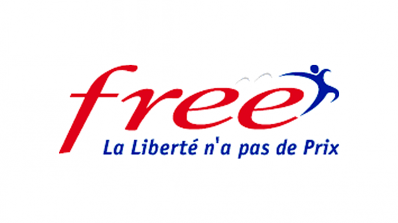
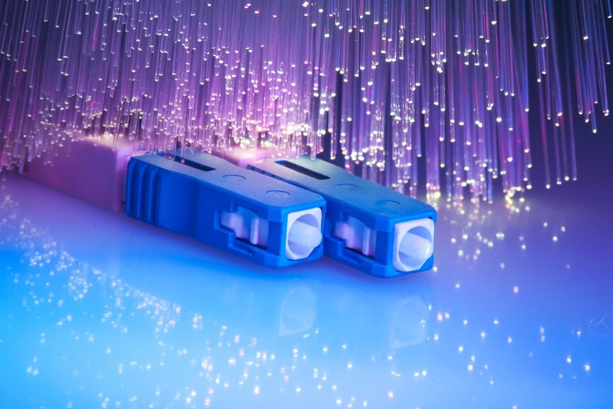
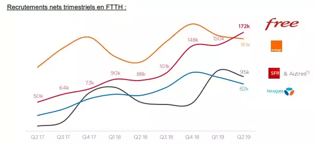

Free partie histoire
En 2002, l'arrivée de Free sur le marché français des télécommunications a
radicalement perturbé l'équilibre économique, avec des tarifs abordables.
Comment cette perturbation a-t-elle influencé le paysage des tarifs télécom ?


En 2007, Free a marqué l'histoire en devenant le premier opérateur
à introduire la fibre optique en France, une technologie plus rapide et stable.
Cette avancée a permis d'offrir des connexions internet ultrarapides aux foyers français.
Free a également été un précurseur dans le domaine de la téléphonie mobile. En 2010, l'entreprise
a introduit la 4G en France, offrant ainsi des vitesses de connexion mobile inégalées.
C’est aussi l’année de lancement de la Freebox Revolution, qui a été une avancée majeure pour Free,
offrant des fonctionnalités avancées telles qu'un lecteur Blu-ray, un disque dur intégré, et une télécommande
avec gyroscope.

L'engagement de Free envers un service client de qualité a été un pilier essentiel de son succès.
En étant l'un des premiers opérateurs à proposer un service client disponible 24/7, Free a démontré
sa détermination à offrir une assistance accessible à tout moment. De plus, en fournissant une variété
de canaux de communication et en se concentrant sur la réactivité et la résolution rapide des problèmes,
Free a établi sa réputation en tant qu'opérateur axé sur la satisfaction client, renforçant ainsi la confiance
des abonnés et favorisant sa croissance dans l'industrie des télécommunications.
Free a connu une croissance constante, comptant plus de 20 millions de clients en 2021. L'entreprise continue
d'innover, proposant une gamme de services incluant la téléphonie mobile, la télévision par internet,
et des forfaits tout-inclus.
